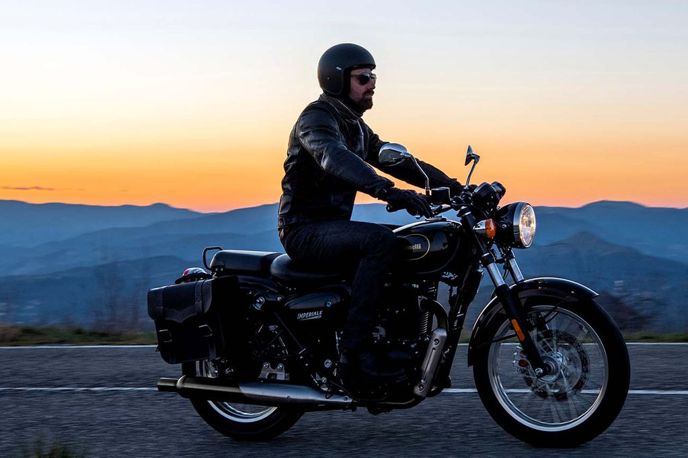

Imperiale 400, la clásica moto Benelli que retrocede en el tiempo
De perspectiva retro y diseño sencillo, la Imperiale 400 vuelve el tiempo atrás para ofrecer a los nuevos ciclistas una experiencia de manejo clásica, elegante y apasionada. Conocé todos sus detalles, y conseguila en Maipú con imperdible financiación.

La Imperiale 400 de Benelli es la motocicleta ideal para las personas amantes de lo clásico. Su diseño se basa en la Benelli Motobi Imperiale de los años 50, pero ofrece características de vanguardia en términos de rendimiento y fiabilidad. Su motor monocilíndrico de cuatro tiempos, refrigerado por aire y sujeto firmemente dentro de un bastidor de doble cuna de tubo y placa de acero, ofrece a los ciclistas la potencia que necesitan para una conducción placentera. En cuanto a tecnología, ofrece un grupo de pantallas de cristal líquido (TFT LCD) de forma asimétrica y película delgada, que se adaptan a la era digital. El compromiso total con su diseño se extiende desde sus faros delanteros circulares hasta los indicadores traseros y la barra de agarre a juego. Sencilla, confiable y apasionada. Así es la Imperiale 400. Financiación exclusiva en Maipú El concesionario oficial de Benelli en Córdoba ofrece una imperdible oportunidad de financiación para este modelo. Aquellos nuevos clientes del banco BBVA, pueden financiar hasta el 50% del valor de la Imperiale 400 en 6 cuotas fijas y sin interés, es decir, a tasa 0%. Cabe destacar que el concesionario cuenta con stock disponible para entrega inmediata, por lo que los interesados podrán llevarla en el acto al momento de su compra. Además, pueden conocer otros modelos disponibles y consultar por ellos en la web oficial de Maipú Benelli, o bien dirigirse al salón de ventas ubicado en Av. Colón 4183
